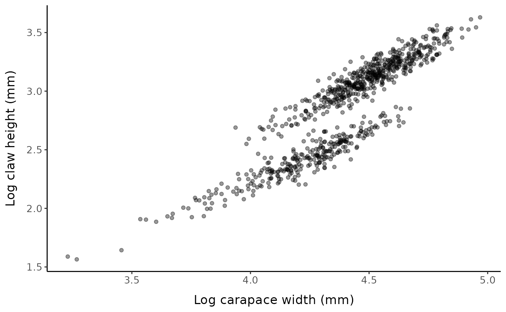

We will start by simulating a data set with a known SM50 value of 75
mm to demonstrate an example workflow using morphmat. See
vignette("simulations") and the
fake_crustaceans() documentation for more details on the
structure of our artificial data set.
set.seed(12) # set seed for reproducibility
fc <- fake_crustaceans(
error_scale = 17,
slope = 9,
L50 = 75, # known size at maturity is 75 mm
n = 800, # sample size
allo_params = c(0.9, 0.25, 1.05, 0.2),
x_mean = 85 # mean carapace width of the sample
)
mytheme <- theme_classic() + # define custom theme for ggplots
theme(
axis.title.y = element_text(margin = margin(t = 0, r = 10, b = 0, l = 0)),
axis.title.x = element_text(margin = margin(t = 10, r = 0, b = 0, l = 0)),
text = element_text(size = 13))Plot your data
Original scale
ggplot() +
geom_point(data = fc, aes(x, y), alpha = 0.4) +
labs(x = "Carapace width (mm)", y = "Claw height (mm)", ) +
mytheme
Log-log scale
ggplot() +
geom_point(data = fc, aes(log_x, log_y), alpha = 0.4) +
labs(x = "Log carapace width (mm)", y = "Log claw height (mm)", ) +
mytheme
Suggested method
mclust for classification
clust_dat <- cbind(fc$x, fc$y)
mclust_class <- mclust::Mclust(data = clust_dat,
G = 2,
modelNames = "EVV")
broom::glance(mclust_class) %>% select(-hypvol)
#> # A tibble: 1 × 6
#> model G BIC logLik df nobs
#> <chr> <int> <dbl> <dbl> <dbl> <int>
#> 1 EVV 2 -10582. -5258. 10 800
fc_mclust <- fc %>%
rename(true_maturity = mature) %>%
mutate(pred_maturity = mclust_class$classification)
mature_label <- slice_max(fc_mclust, x) %>% pull(pred_maturity)
fc_mclust <- fc_mclust %>%
mutate(
pred_maturity = if_else(pred_maturity == mature_label,
as.factor(1), as.factor(0)),
pred_maturity_num = if_else(pred_maturity == 1,
as.numeric(1), as.numeric(0))
) %>%
mutate(uncertainty = mclust_class$uncertainty)Compare the mature and immature groups
fc_mclust %>%
mutate(mature = if_else(pred_maturity == 0, "Immature", "Mature")) %>%
tbl_summary(include = c(x, y),
by = mature,
type = all_continuous() ~ "continuous2",
label = list(x ~ "Carapace width (mm)", y ~ "Chela height (mm)"),
statistic = list(
all_continuous() ~ c("{mean} (\U00B1{sd})",
"{min}-{max}"))) %>%
add_p() %>%
modify_header(label ~ "",
all_stat_cols() ~ "**{level}**<br>N = {n} ({style_percent(p)}%)") %>%
add_stat_label(label = all_continuous() ~ c("Mean (\U00B1SD)", "Min - Max"))
#> The following errors were returned during `modify_header()`:
#> ✖ For variable `x` (`mature`) and "p.value" statistic: The package "cardx" (>=
#> 0.2.2) is required.
#> ✖ For variable `y` (`mature`) and "p.value" statistic: The package "cardx" (>=
#> 0.2.2) is required.| Immature N = 287 (36%) |
Mature N = 513 (64%) |
p-value | |
|---|---|---|---|
| Carapace width (mm) | |||
| Mean (±SD) | 69 (±15) | 92 (±16) | |
| Min - Max | 25-107 | 51-144 | |
| Chela height (mm) | |||
| Mean (±SD) | 11 (±2) | 23 (±4) | |
| Min - Max | 5-18 | 13-38 |
ggplot(data = fc_mclust) +
mytheme +
geom_point(aes(x, y, color = pred_maturity, fill = pred_maturity),
alpha = 0.5, shape = 21) +
scale_color_manual(values = c("0" = "#368aab", "1" = "#993843"),
breaks = c(0, 1), labels = c("0" = "Immature", "1" = "Mature")) +
scale_fill_manual(values = c("0" = "#7bbcd5", "1" = "#CA6E78"),
breaks = c(0, 1), labels = c("0" = "Immature", "1" = "Mature")) +
labs(x = "Carapace width (mm)", y = "Chela height (mm)",
color = "Predicted clusters", fill = "Predicted clusters")
Predicted clusters using mixture-based clustering.
Comparing clustering approaches
# Here there will be a function where you can compare the results of many
# different clustering methods: mclust, Somerton, infl_pt, kmeans, & hclust
# cluster_mods(fc, xvar = "x", yvar = "y", method = c("all"))Comparison with piecewise regression models
piecewise_mods(fc, xvar = "x", yvar = "y", method = c("all"))
#> chngpt segmented REGRANS
#> 67.68312 63.95451 67.67091
#> Stevens Two_line.breakpoint Two_line.intersection
#> 68.33387 75.43651 56.76587
piecewise_mods(fc, xvar = "x", yvar = "y", method = c("all"),
log = TRUE) %>% exp()
#> chngpt segmented REGRANS
#> 67.68312 62.82577 67.67091
#> Stevens Two_line.breakpoint Two_line.intersection
#> 68.33387 75.21507 50.25602